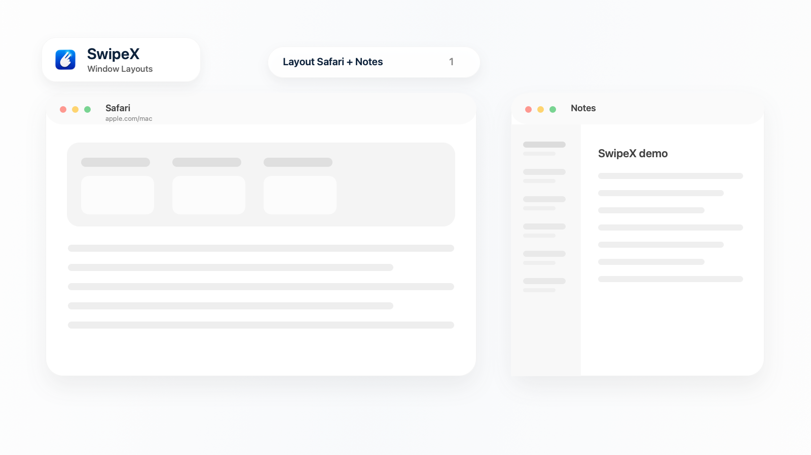

SwipeX for macOS
SwipeX is a trackpad-first macOS window manager built for title-bar swipe gestures, Window Layouts, Smart Fill, and Quick Access.

Official website: https://swipex.lynvivian.com/
What SwipeX does
- Snap windows with title-bar swipe gestures.
- Save and restore Window Layouts.
- Show the window behind with a clockwise swipe gesture.
- Maximize a window with a counterclockwise swipe gesture.
- Use Quick Access for apps, websites, folders, and files.
Public links
This GitHub Pages site is a compact public project page for SwipeX. The official product website is swipex.lynvivian.com.